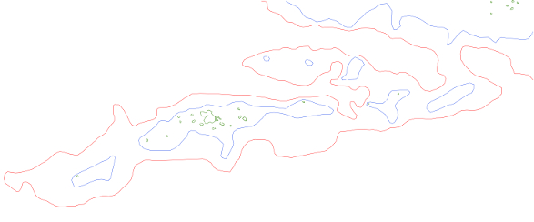

| västerut |
TOC |
österut |
index |
A34 |
Efter att banan "dyker upp" från Ålands hav, upp vid Flötjan så kommer bana att utnyttja ett naturfenomen, nämligen en undervattens högrygg som på sina ställen t.o.m bilder små öar. Från ytan sett är det svårt att fatta att det är en och samma rygg men på 50m djup är bilden en annan:

50m kurvan utgörs av den tunna röda linjen, de blå linjerna visar var det är bara 10m. Som små "brödsmulor" i grönt är befintliga öar utritade. På grund av öarnas/kobbarnas litenhet framträder de ej väl på satellit bilden om bilden ej förstoras tillräckligt. På sjökort är dock detta naturfenomen tydligt och öarna, kobbarna med tillhörande grynnor har i årtusenden varit ett problem för sjöfarten.
Om denna högrygg kan utnyttjas som bas för en delvis undervattens järnväg är en fråga som bör utredas, på basen av sjökortet ser det ut som en möjlighet.
Märk även den smala rygg som startar egentligen öster om Vittensten mot Lemland. Detta på basen av sjökortet är första möjliga ställe där en bana kan byggas på ett djup mindre än 50m. Orsaken varför bana Kapellskär-Karis gör efter Vittenstenen en så brant krök är att denna möjlighet utnyttjas.